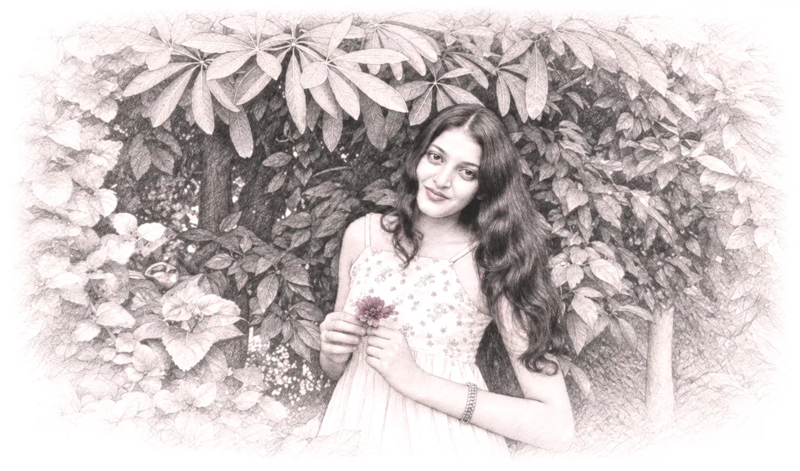

WISHING YOU A
✨ A special day for a special person ✨


FOR YOU ❤
A letter from bottom of my Heart ❤️
Pata nahi ye letter kabhi tum tak pahunch payega ya nahi…
aur pata nahi tum ise padhkar kya feel karogi 😊.
Lekin aaj main bas ek baar apne dil ki woh baat kehna chahta hoon, jo shayad main kabhi tumhe properly keh hi nahi paaya. Bas ek baar ise poora padh lena… ignore mat karna. Ye paragraph mere dil se hai, warna mujhe hamesha lagega ki meri awaaz tum tak kabhi pahunchi hi nahi.
Shayad main kabhi tumhe ye sab properly bata nahi paaya…
Pata nahi kab tum meri life ka itna khoobsurat hissa ban gayi. Kab tumhari ek chhoti si smile mera mood theek karne lagi, kab tumhari baaton ka intezaar rehne laga… pata hi nahi chala.
Tumhare saath har cheez thodi si zyada special lagti hai. Tumhari random baatein, tumhara hasna, tumhara gussa, tumhari woh chhoti-chhoti aadatein — shayad tumhe normal lagti hain, par mere liye yehi sab tumhe tum banata hai.
Maine bahut koshish ki tumhe bhoolne ki.
Khud ko samjhaya, busy rakha,
ye socha ki waqt ke saath sab theek ho jayega.
mahine beet gaye… par sach kahun? Main tumhe bhool nahi paaya.
Subah aankh khulti hai to kabhi na kabhi tumhara khayal aa hi jaata hai.
Raat hoti hai to din khatam hone se pehle phir tum yaad aa jaati ho.
Shayad tum apni zindagi mein aage badh chuki ho…
par mera woh masoom sa dil abhi bhi wahi kahin khada hai,
jahan usne tumse sach mein pyaar kiya tha.
Mujhe samajh nahi aata ki pyaar ko excitement ke khatam hone se kaise measure kiya ja sakta hai.
Shayad tumhare liye woh excitement dheere-dheere khatam ho gayi thi. Shayad wahi wajah thi jisne tumhe mujhse door kar diya.
Lekin main aaj tak ek cheez nahi samajh paaya…
Kya kisi rishte mein excitement ka kam ho jaana, us rishte mein pyaar ke khatam ho jaane ka matlab hota hai?
Kyunki har naya insaan, har nayi baat, har naya rishta shuru mein exciting hota hai. Nayi conversations, naye experiences, ek doosre ko discover karne ki woh feeling… sab kuch alag hota hai.
Lekin phir ek waqt aata hai jab wahi naya insaan jaana-pehchaana ho jaata hai. Baatein routine ban jaati hain. Milna normal lagne lagta hai.
Toh kya phir uss rishte se nikal jaana hi sahi hota hai?
Shayad tumhe mere jaise bahut log mil jaayenge…
par mere jitna pyaar karne wala shayad na mile.
Main ye nahi jaanta ki aane wala waqt humare liye kya lekar aayega. Lekin ek cheez sach hai — main tumhari khushi ko hamesha dil se wish karunga.
Tumhe zindagi mein woh sab mile jo tum deserve karti ho.
Aur jab kabhi tum khud par doubt karo, bas itna yaad rakhna…
Kahin na kahin ek insaan hai jo tumhe jitna tum khud samajhti ho, usse kahin zyada khoobsurat dekhta hai.